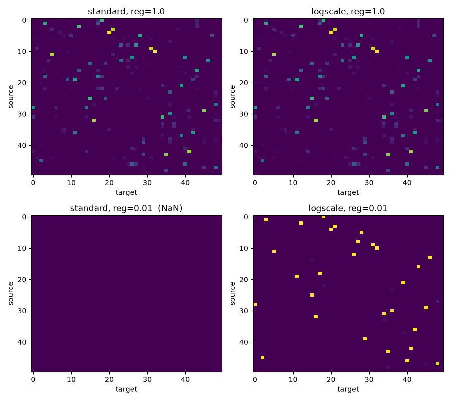

Note
Go to the end to download the full example code.
Numerically-stable entropic partial Wasserstein (log-domain solver)
Note
Example added in release: 0.9.7.
ot.partial.entropic_partial_wasserstein is numerically unstable at small
regularisation: the iterates underflow to zero and the returned plan
contains NaNs (see PythonOT/POT issue #723). This example reproduces the
failure mode on a small problem and shows that the log-domain solver,
selected with entropic_partial_wasserstein(..., method='sinkhorn_log')
(equivalently ot.partial.entropic_partial_wasserstein_logscale),
produces a finite plan over the same sweep, agreeing with the original
solver at large reg and degrading gracefully at small reg.
Following the ot.sinkhorn convention, the solver to use is chosen
through the method parameter: 'sinkhorn' (default) for the classical
solver and 'sinkhorn_log' for the log-domain one. The log-domain solver
is slower per iteration than the standard one, so the recommendation is to
use the standard solver by default and fall back to the log-domain solver
when reg is small enough to risk underflow.
# Author: wzm2256 <wzm2256@qq.com> (original PR #724)
# License: MIT License
import numpy as np
import scipy as sp
import matplotlib.pylab as pl
import ot
Construct a 50x50 cost matrix
Mirrors the cost-matrix scale (~50) used in PythonOT/POT issue #723.
Sweep regularisation
Run both solvers across a range of reg values. On this 50×50 problem
at cost-scale 50 the standard solver returns NaN at the reg values
closest to the underflow boundary (typically reg ~0.05–0.01 in our
runs, though the exact transition depends on the BLAS / platform’s
float64 underflow behaviour); the log-domain solver stays finite over
the whole sweep, including the very small reg regime where the
standard exp(−M/reg) path would underflow to zero everywhere.
regs = [1.0, 0.5, 0.1, 0.05, 0.01, 5e-3, 1e-3, 5e-4]
standard_finite = []
logscale_finite = []
standard_mass = []
logscale_mass = []
for reg in regs:
G_std = ot.partial.entropic_partial_wasserstein(
a, b, M, reg=reg, m=m, numItermax=2000
)
G_log = ot.partial.entropic_partial_wasserstein(
a, b, M, reg=reg, m=m, method="sinkhorn_log", numItermax=2000
)
standard_finite.append(bool(np.isfinite(G_std).all()))
logscale_finite.append(bool(np.isfinite(G_log).all()))
standard_mass.append(float(G_std.sum()) if np.isfinite(G_std).all() else np.nan)
logscale_mass.append(float(G_log.sum()))
print(
"reg standard_finite logscale_finite std_mass logscale_mass (target m={:.2f})".format(
m
)
)
for reg, sf, lf, sm, lm in zip(
regs, standard_finite, logscale_finite, standard_mass, logscale_mass
):
print(f"{reg:>10.4g} {str(sf):<14} {str(lf):<14} {sm:>8.3f} {lm:>8.3f}")
/home/circleci/project/ot/partial/partial_solvers.py:620: RuntimeWarning: invalid value encountered in divide
q1 = q1 * Kprev / K1
/home/circleci/project/ot/partial/partial_solvers.py:624: RuntimeWarning: invalid value encountered in divide
q2 = q2 * K1prev / K2
/home/circleci/project/ot/partial/partial_solvers.py:628: RuntimeWarning: invalid value encountered in divide
q3 = q3 * K2prev / K
Warning: numerical errors at iteration 1
/home/circleci/project/ot/partial/partial_solvers.py:619: RuntimeWarning: divide by zero encountered in divide
K1 = nx.dot(nx.diag(nx.minimum(a / nx.sum(K, axis=1), dx)), K)
/home/circleci/project/ot/partial/partial_solvers.py:619: RuntimeWarning: overflow encountered in divide
K1 = nx.dot(nx.diag(nx.minimum(a / nx.sum(K, axis=1), dx)), K)
/home/circleci/project/ot/partial/partial_solvers.py:623: RuntimeWarning: divide by zero encountered in divide
K2 = nx.dot(K1, nx.diag(nx.minimum(b / nx.sum(K1, axis=0), dy)))
Warning: numerical errors at iteration 1
reg standard_finite logscale_finite std_mass logscale_mass (target m=0.60)
1 True True 0.600 0.600
0.5 True True 0.600 0.600
0.1 True True 0.600 0.600
0.05 False True nan 0.600
0.01 False True nan 0.600
0.005 True True 0.600 0.600
0.001 True True 0.600 0.600
0.0005 True True 0.600 0.600
Plot the resulting plans at large vs. small reg
fig, axes = pl.subplots(2, 2, figsize=(9, 8))
for ax, reg in zip(axes[:, 0], (1.0, 0.01)):
G_std = ot.partial.entropic_partial_wasserstein(
a, b, M, reg=reg, m=m, numItermax=2000
)
if not np.isfinite(G_std).all():
G_std = np.zeros_like(G_std)
ax.set_title(f"standard, reg={reg} (NaN)")
else:
ax.set_title(f"standard, reg={reg}")
ax.imshow(G_std, cmap="viridis", aspect="auto")
ax.set_xlabel("target")
ax.set_ylabel("source")
for ax, reg in zip(axes[:, 1], (1.0, 0.01)):
G_log = ot.partial.entropic_partial_wasserstein(
a, b, M, reg=reg, m=m, method="sinkhorn_log", numItermax=2000
)
ax.set_title(f"logscale, reg={reg}")
ax.imshow(G_log, cmap="viridis", aspect="auto")
ax.set_xlabel("target")
ax.set_ylabel("source")
fig.tight_layout()
pl.show()

Warning: numerical errors at iteration 1
Total running time of the script: (0 minutes 14.974 seconds)